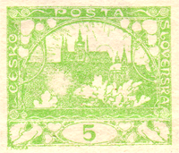
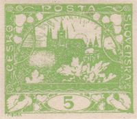
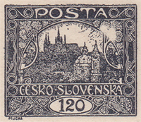
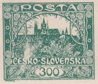
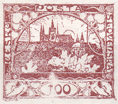
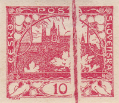

Voiles et taches sur les timbres de l’émission Hradčany
Les voiles et les taches comptent parmi les défauts d’impression. Tous les défauts d’impression ont pour cause une conduite et une manipulation incorrectes des machines à imprimer – ils sont donc fortuits et nous ne les rangeons pas dans le groupe des défauts de planche.
Les voiles et les éclaircies sont dus à un corps étranger qui, au cours de l’impression, est arrivé sur la planche d’impression. Il ne s’y est cependant pas maintenu et, en tombant, il a emporté avec lui la couche d’encre – à cet endroit de la feuille est apparue une zone à l’impression pâle et sans force.
Les taches blanches ou colorées apparaissent lorsque le corps étranger se fixe sur la planche d’impression. La pression de la machine l’enfonce dans la planche, où il se met à recouvrir une partie du dessin, ou bien à repousser l’encre d’impression.
La première Monographie des timbres tchécoslovaques mentionne les taches colorées et blanches suivantes :
- 1h – dans la colombe de droite – 98/1
- 1h – entre SKO–SLO – 10/2
- 5h (vert clair) – au-dessus du buisson, verticale – 46/1 (dite « grappe »)
- 5h (vert clair) – au-dessus du buisson, horizontale – 27/2 (dite « zeppelin »)
- 5h (vert clair) – derrière le chiffre 5 – 61/1, 71/1
- 30h (olive jaune) – le long du bas du cartouche – 91/2
- 120h – dans les feuilles de droite – 6/2
- 300h – en ramure à travers le buisson – 97/1
- 400h – sur la coupole de la cathédrale – 6/1
- 400h – au-dessus du buisson – 58/1
- 400h – à gauche sous le cartouche – 36/2
Et ce que vous ne trouverez pas dans la Monographie : 100h – dans le cartouche et au-dessus du buisson – 60/2.





Au cours de l’étude des timbres lors des reconstitutions de planches d’impression, j’ai rencontré un grand nombre d’éclaircies plus ou moins étendues. J’aimerais en publier progressivement la description sur ce site. J’ai commencé par ma valeur préférée, le 15h (POFIS n° 7), où la première et la deuxième planche d’impression sont en particulier une mine d’or d’éclaircies.
Les « foudres » !
Sont également recherchés les timbres pour lesquels des lacets et des ficelles se sont retrouvés sur la planche d’impression. Ces défauts sont appelés « hromovka » (foudre) ou « provázek » (ficelle).

Littérature utilisée : Monographie des timbres tchécoslovaques n° 1